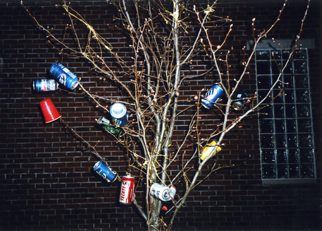
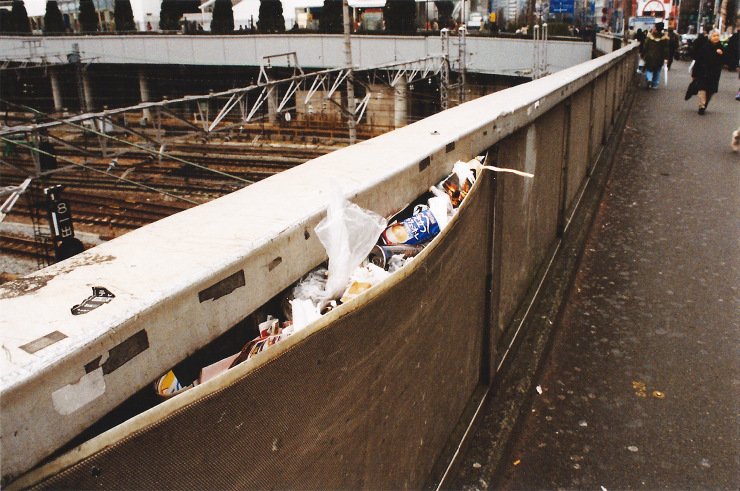
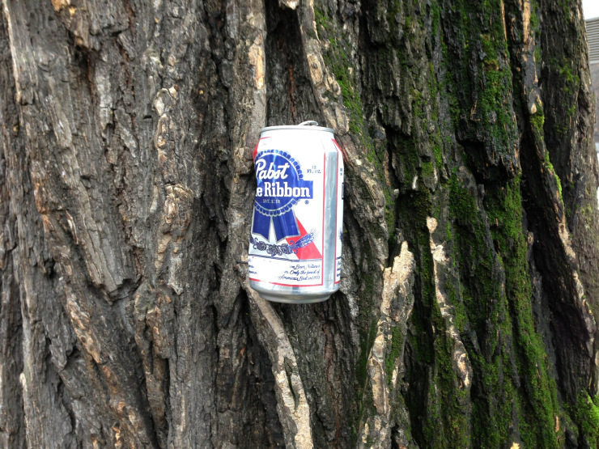
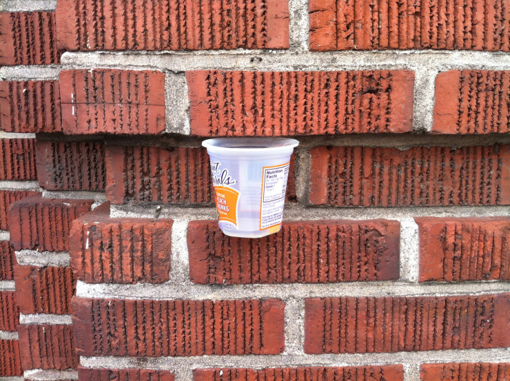

Litterplugs
Everybody knows that you shouldn’t throw your garbage on the ground, it’s dirty, ugly, bad for the environment and a really bad habit. But still people do so… They just emptied an can of Coke or ate a gum and now they have the wrapper in their hands, and what do some people do? Throw it on the ground.
Throwing garbage on the ground is littering; but what if you don’t throw it on the ground? Can you still call it littering?
Afvalboom
These temporary “trashcans” are everywhere around us; in our parks, in the city centre, even in our own street. Some of these “trashcans” are more creative than others; people use their litter to plug holes, no matter how small or big. Litterplugs (if I may).

Some people go one step further and try to plug every single spot the can find.

Even trees can’t escape the litterplugging.

Litterplugs are more abundant then ever before, every piece of our society and streets is the proof of it; but maybe, if we give this phenomena a name, that it will decrease. Until then, try enjoy what these creative polluters create.
